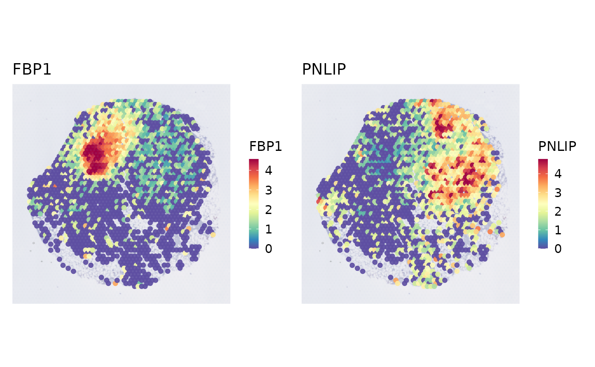
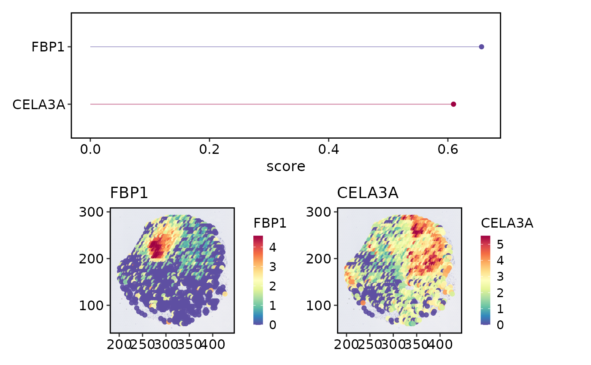

Run spatial variable feature detection
Source:R/RunSpatialVariableFeatures.R
RunSpatialVariableFeatures.RdScore genes by spot-level spatial autocorrelation. The package "moran" and
"geary" methods use a lightweight coordinate KNN graph. "SPARKX" and
"nnSVG" use optional external backends when their packages are installed.
Usage
RunSpatialVariableFeatures(
object = NULL,
assay = NULL,
layer = "data",
features = NULL,
method = c("moran", "geary", "SPARKX", "nnSVG"),
image = NULL,
coord.cols = c("x", "y"),
k = 6,
nfeatures = 2000,
min_spots = 5,
nperm = 0,
set_variable_features = TRUE,
store_results = TRUE,
verbose = TRUE,
seed = 11,
coordinate_space = c("raw", "legacy_display"),
backend = c("cpp", "r"),
cores = NULL,
max_dense_gb = 2,
...,
srt = NULL
)Arguments
- object
A
Seuratobject.- assay
Assay to use.
NULLuses the default assay.- layer
Assay layer used for expression values.
- features
Features to score. If
NULL, current variable features are used; if no variable features are present, all assay features are used.- method
Spatial variable feature detection method.
- image
Spatial image name. Required when multiple images are present; a single image is selected automatically when
NULL.- coord.cols
Metadata coordinate columns used when no image is available.
- k
Number of nearest spatial neighbors per spot.
- nfeatures
Number of top spatial features stored in
srt@tools[["SpatialVariableFeatures"]].- min_spots
Minimum number of spots with non-zero expression required for a feature to be tested.
- nperm
Number of label permutations used for empirical p values. The default
0skips p-value calculation.- set_variable_features
Whether to set the top spatial features as variable features for
assay.- store_results
Whether to store the full result in
srt@tools.- verbose
Whether to print the message. Default is
TRUE.- seed
Random seed used for permutation tests.
- coordinate_space
Coordinate system used for distance-sensitive analysis. The default is raw, unscaled acquisition coordinates. Use
"legacy_display"explicitly to reproduce the display-scaled coordinates used before scop 0.9.0. Distance thresholds and weights use the selected coordinate units;kis a unitless neighbor count.- backend
Backend used by the package
"moran"and"geary"methods."cpp"is the default; use"r"for the reference implementation.- cores
Number of OpenMP threads for C++ Moran/Geary scoring.
NULLuses the process OpenMP default.- max_dense_gb
Maximum estimated GB for an expression matrix conversion in the R-reference or nnSVG path. The C++ and SPARK-X paths retain sparse input. This guard bounds one conversion, not total backend memory.
- ...
Additional arguments passed to external backends.
- srt
Deprecated alias for
object; supply exactly one of the two. It will be removed in scop 1.0.0.
Value
A Seurat object with spatial variable feature results stored in
srt@tools[["SpatialVariableFeatures"]]. Top feature names are available
at srt@tools[["SpatialVariableFeatures"]]$summary$top_features.
Examples
Restored example output generated on 2026-10-13 from SCOP 53ed7e08f. These historical examples have not been revalidated against the current release. Current usage and arguments are documented above.
data(visium_human_pancreas_sub)
spatial <- Seurat::NormalizeData(
visium_human_pancreas_sub,
assay = "Spatial",
verbose = FALSE
)
spatial <- Seurat::FindVariableFeatures(
spatial,
assay = "Spatial",
nfeatures = 100,
verbose = FALSE
)
SpatialSpotPlot(
object = spatial,
features = Seurat::VariableFeatures(spatial, assay = "Spatial")[1:2]
)

spatial <- RunSpatialVariableFeatures(
object = spatial,
assay = "Spatial",
nfeatures = 50
)
#> ◌ [2026-10-13 17:21:03] Running spatial variable feature detection
#> ✔ [2026-10-13 17:21:03] Spatial variable features completed: 100 tested, 50 ranked in the top set
#> ℹ Scope method "moran" ("cpp" backend); assay "Spatial", layer "data"; 1986 spots; coordinates "raw"
#> ℹ Saved 50 top features as assay `VariableFeatures`; full result in returned object tool bundle `SpatialVariableFeatures`
#> ℹ Plot returned object `SpatialVariableFeaturePlot(<returned_object>, plot_type = "combined", assay = "Spatial", image = "slice1", coord.cols = c("x", "y"))`
SpatialVariableFeaturePlot(object = spatial, plot_type = "combined", nfeatures = 2)
